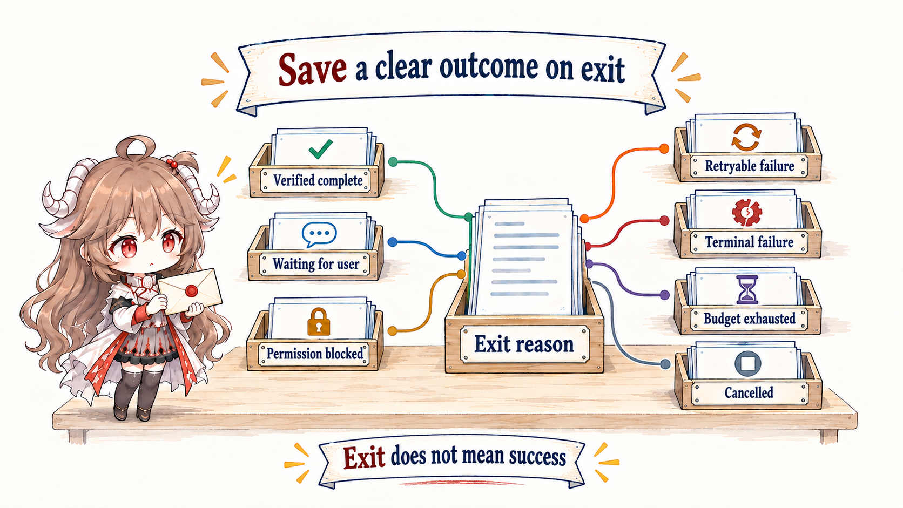
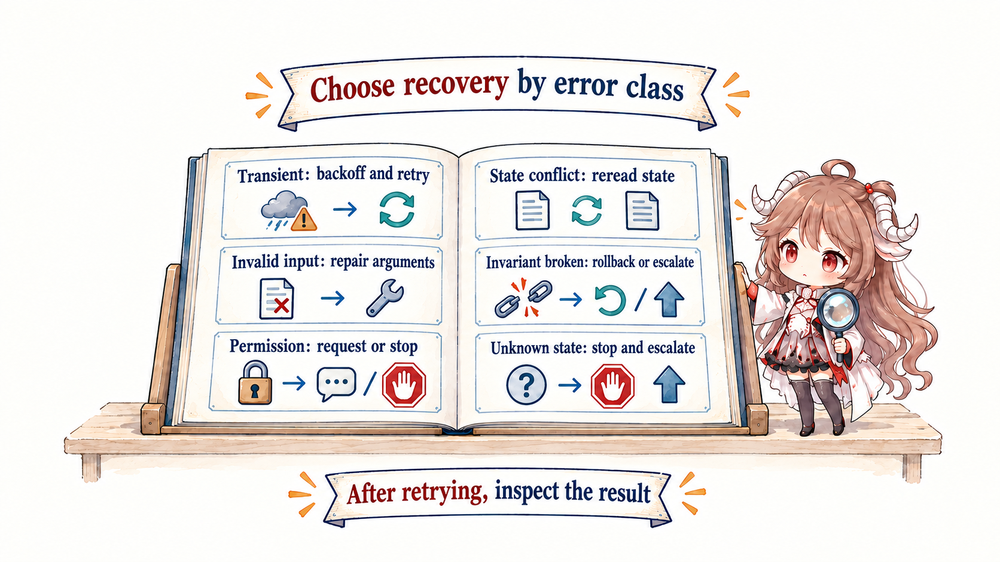

After this article: you should be able to tell the story of one run, explain why every observation must change the next decision, and design clear state, exit, budget, and retry rules.
Evidence boundary: the mechanisms come from OpenAI’s official Codex Agent Loop walk-through and practical agent guide, plus Anthropic’s Building effective agents. SDK events and API fields vary; the state names here are vendor-neutral abstractions.
1. Understand the loop through one task
1.1 Watch one task advance through four rounds
An Agent receives “fix the failing payment test.” It cannot responsibly edit the first plausible line and stop. A useful run might unfold like this:
- Round 1: read the failure and relevant code. The new observation is that an expired-order guard is missing.
- Round 2: make the smallest code change. The new observation is the exact diff.
- Round 3: run the payment tests. The new observation is another failure in a related case.
- Round 4: adjust the change and run the tests again. The new observation is a passing result.
Each round uses what the previous round discovered. If the Agent keeps issuing the same command after the same error, it is not progressing; it is only repeating.
1.2 Give this repeated process a name
An Agent Loop is the repeated process inside one run: prepare the current information, ask the model for the next step, execute an allowed action through the harness, observe the result, and decide whether to continue or stop.
Three roles are enough to understand the basic loop. The model proposes the next step. The harness turns an allowed proposal into a real action and observation. The loop controller carries state forward and decides whether another round is needed.
For a beginner, the loop first needs only three broad states: running, waiting, and stopped. Later we will split them into completed, blocked, failed, cancelled, and other precise states.
2. Make one run converge through evidence
2.1 Every round must change the next decision
In plain language, each round must bring back a change for the next one: reading a file produces a new fact, running a test produces a new error, and editing code produces a new diff. The outer program organizes that result, updates progress, and prepares the next packet of material. Continuing is useful only when evidence, plan, risk, or the done judgment has changed.
The table below only gives engineering names to the actions you already saw. Preparing material is Assemble, model judgment is Infer, action is Execute, organizing the result is Observe, and choosing whether to continue is Decide. It is not a second process.

| State | Input | New fact it must produce |
|---|---|---|
| Assemble | Goal, control state, recent observation | Next model view and budgets |
| Infer | Model view | Governed proposal or final candidate |
| Execute | Authorized tool call | Typed result, artifact, environment delta |
| Observe | Result and world delta | Success, failure, or unknown with provenance |
| Decide | Done criteria, risk, budgets | Continue or an explicit exit reason |
2.2 Stopping has more than two meanings
“The model returned final” is a signal, not a termination protocol. The runtime should map it to verified completion, waiting for user input, blocked by authority, retryable failure, terminal failure, exhausted budget, or cancellation. Each exit needs different evidence and a different next owner.

| Exit | Minimum evidence | Next owner |
|---|---|---|
| Completed | Done check passed plus artifact or diff | Evaluator or delivery flow |
| Waiting user | Missing decision, options, default impact | User |
| Blocked | Required capability or permission and current scope | Harness owner or approver |
| Retryable failure | Error class, attempt, backoff condition | Current loop or outer loop |
| Terminal failure | Unrecoverable reason, reconciled in-flight effects, failure artifact | Outer loop, evaluator, or person |
| Budget exhausted | Completed, remaining, checkpoint | Outer loop or person |
| Cancelled | Cancel source, in-flight action, cleanup | Harness cleanup |
2.3 Define “done” before the first action
Without a done contract, an agent substitutes fluent prose for completion. A bug fix may require the target test, relevant regressions, a scoped diff, and no unexplained effects. Research may require source coverage, citations for every conclusion, and marked conflicts. Done enters state before the loop starts and is reevaluated after every observation.
The model may propose “I believe this is done.” Deterministic checks should run in the harness; subjective quality can go to an independent grader or person. Reflection helps, but one component should not be contestant and sole judge.
Put the three checks on different time scales and the boundary is clearer. After this test passes, the Agent Loop asks, “may this run exit?” The Outer Loop reads test, CI, or review evidence and asks, “may this long-lived work item end?” Evals repeat many tasks and ask, “did this system version become reliably better?” They check one run, one work item, and one system version respectively.
2.4 Why an Agent cannot run forever
A loop manages time, model calls, tool calls, tokens, external APIs, concurrency, and risk. A maximum iteration count treats a cheap read and an expensive deployment equally. Better controllers estimate value and cost before each action and reserve capacity for validation.
- Near a limit, narrow search, reduce parallelism, or request a choice instead of stopping abruptly.
- Reserve an independent verification budget so editing cannot consume the ability to test.
- Risky writes pass through an independent authority gate; more tokens cannot compensate for missing authority.
- Budget exhaustion produces a checkpoint and exit reason, never a disguised completion.
2.5 A retry must introduce a change
Retry is meaningful only if input, environment, strategy, or time changes. Repeating the same arguments, error, and context is a loop defect. Classify transient, invalid input, permission, not found, conflict, invariant violation, and unknown errors to choose recovery.

| Error class | Useful change | Do not |
|---|---|---|
| Transient | Backoff, jitter, bounded retry | Replay at full speed |
| Invalid input | Read schema and repair arguments | Retry identical arguments |
| Permission | Request explicit authority or use a read-only path | Bypass the gate |
| Conflict / stale | Refresh state and replan | Overwrite new truth |
| Invariant failure | Rollback, shrink the change, escalate | Stack more changes |
| Unknown | Save artifacts, stop, or probe in isolation | Explain forever |
3. Advanced: expand three broad states into a recoverable state machine
By this point, a beginner can review one run through evidence changes, done criteria, exit reasons, budgets, and meaningful retries. Only when implementing the controller do those judgments need to become durable state.
while (toolCalls.length) expresses a syntax condition, not an engineering state. At minimum distinguish running, waiting approval, waiting user, blocked, completed, failed, cancelled, and budget exhausted. State determines who may wake the run, which resources remain valid, and whether an outer loop can retry safely.
{
"run_id": "run_18",
"state": "running",
"iteration": 7,
"goal": { "id": "fix-payment-test", "done_check": "test://payment" },
"last_observation": { "kind": "test_failure", "ref": "log://9f2" },
"budgets": { "tool_calls_left": 12, "time_s_left": 480 },
"progress": { "changed_files": 2, "same_failure_count": 1 }
}while run.state == "running":
view = assemble_context(run)
proposal = model.infer(view)
observation = harness.dispatch(proposal, run)
run = transition(run, observation)
if done_check(run):
run.state = "completed"
elif repeated_without_change(run):
run.state = "blocked"
checkpoint(run)policy.ask moves running to waiting_approval; approval_granted wakes it back to running; only a test observation that satisfies the done check enters completed. Model final text alone cannot complete the run.4. Review the health of one run
| Review point | Healthy signal | Danger signal |
|---|---|---|
| Progress | New evidence or state delta every iteration | Same calls and errors repeat |
| Done | Defined before, verified after | Final-answer tone |
| Exit | Machine-readable reason and checkpoint | Success/failure boolean only |
| Budget | Multiple budgets, dynamic, verification reserved | Only max iterations |
| Recovery | Strategy changes by error class | Retry every error |
| Human | Intervenes at judgment and authority boundaries | Approves everything or never appears |
The agent loop makes one run converge with evidence. Next we lengthen the horizon: when work requires triggers, queues, checkpoints, and handoffs across runs, design the outer loop.